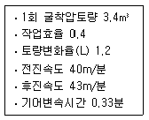
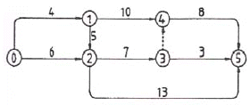
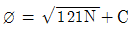
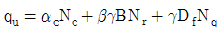
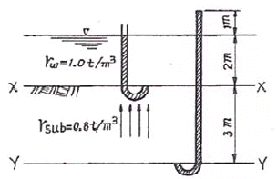
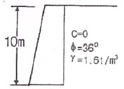

건설재료시험산업기사 (2005-09-04 기출문제)
1과목: 콘크리트공학
1. 레디믹스트 콘크리트의 공기량의 기준에 대한 설명으로 옳은 것은?
- 보통콘크리트의 경우 4.0%이며, 경량콘크리트의 경우 5%로 하되, 그 허용오차는 ±1.0%로 한다.
- 보통콘크리트의 경우 4.5%이며, 경량콘크리트의 경우 5%로 하되, 그 허용오차는 ±1.0%로 한다.
- 보통콘크리트의 경우 4.5%이며, 경량콘크리트의 경우 5%로 하되, 그 허용오차는 ±1.5%로 한다.
- 보통콘크리트의 경우 4.0%이며, 경량콘크리트의 경우 5%로 하되, 그 허용오차는 ±1.5%로 한다.
(정답률: 54%)

2. 다음 중 경화콘크리트 균열의 종류가 아닌 것은?
- 건조수축균열
- 열응력에 의한 균열
- 침하균열
- 알칼리골재반응에 의한 균열
(정답률: 알수없음)
3. 양단이 고정된 콘크리트 보에 건조수축에 의해서 발생되는 응력은 얼마인가? (단, 최종 건조수축률 Єsh=0.0002, 콘크리트 탄성계수는 E = 2.0×104 MPa)
- 1 MPa
- 2 MPa
- 3 MPa
- 4 MPa
(정답률: 알수없음)
4. 다음 중 프리스트레스 도입 즉시 발생하는 프리스트레스의 감소 원인이 아닌 것은?
- 쉬스의 마찰
- 정착장치의 활동
- 콘크리트의 탄성수축
- PS강재의 릴렉세이션
(정답률: 알수없음)
5. 다음 중 콘크리트의 슬럼프 실험에 대한 설명 중 옳지 않은 것은?
- 슬럼프 콘(Cone)에 콘크리트를 용적으로 3회로 나누어 넣는다.
- 타설한 콘크리트의 각 층에서 25회씩 균일하게 다진다.
- 슬럼프 콘의 규격은 밑면의 직경이 20cm, 윗면의 직경 10cm, 높이가 30cm이다.
- 콘크리트를 다 채운 뒤 슬럼프 콘을 수직으로 들어 올렸을 때 무너진 콘크리트의 밑면에서의 높이를 슬럼프값이라고 한다.
(정답률: 알수없음)
6. 콘크리트의 시방배합을 현장배합으로 수정할 경우 고려할 사항으로 바르게 묶은 것은?
- 골재의 표면수량과 입도
- 골재의 밀도와 입도
- 골재의 표면수량과 마모율
- 골재의 밀도와 표면수량
(정답률: 50%)
7. 거푸집 및 동바리 떼어내기의 주의할 점 중에서 옳지 않은 것은?
- 거푸집 및 동바리는 콘크리트가 자중 및 시공중에 가해지는 하중에 충분히 견딜만한 강도를 가질 때까지 그대로 두는 것이 원칙이다.
- 거푸집을 떼어내는 순서는 하중을 많이 받는 부분을 먼저 떼어내고, 그 다음에 남은 중요하지 않은 부분을 떼어내야 한다.
- 슬래브 및 보의 밑면, 아치 내면은 콘크리트의 압축강도가 14MPa 이상이고, 설계기준강도의 2/3 이상이면 거푸집을 떼어 낼 수 있다.
- 연직부재의 거푸집은 수평부재의 거푸집보다 먼저 떼어 내는 것이 원칙이다.
(정답률: 알수없음)
8. 다음 중 콘크리트 품질관리를 위해 이용 가능한 계량값 관리도는?
 관리도
관리도- P관리도
- Pn관리도
- C관리도
(정답률: 75%)
9. 콘크리트의 양생시 주의할 사항으로 잘못된 것은?
- 표면을 충분한 습윤 상태로 유지해야 한다.
- 적당한 온도를 유지해 주어야 한다.
- 습윤과 건조를 반복시켜야 콘크리트의 건조수축을 줄일 수 있다.
- 충격이나 하중으로부터 보호해 주어야 한다.
(정답률: 알수없음)
10. 외기 온도가 25℃ 미만일 때 비비기로부터 치기가 끝날 때까지 최대 얼마의 시간을 넘어서는 안되는가?
- 0.5시간
- 1시간
- 1.5시간
- 2시간
(정답률: 85%)
11. 압축공기를 이용하여 호스 속으로 운반한 모르타르 또는 그의 재료를 시공면에 뿌려서 만든 모르타르를 무엇이라 하는가?
- 수밀모르타르
- 숏크리트
- 주입모르타르
- 프리팩트모르타르
(정답률: 알수없음)
12. 콘크리트에서 공기연행제에 관한 내용 중 틀린 것은?
- 블리딩을 감소시킨다.
- 단위수량을 감소시킨다.
- 단위 잔골재량이 많을수록 공기량이 많아진다.
- 골재 분리를 증가시킨다.
(정답률: 알수없음)
13. 경량골재콘크리트 시공시 유의사항으로 틀린 것은?
- 경량골재는 일반적으로 흡수율이 크므로 골재의 함 수량은 가능한 일정하도록 관리한다.
- 경량골재콘크리트는 슬럼프가 일반적으로 작게 나오는 경향이 있다.
- 경량골재콘크리트는 재료분리가 일어나기 쉬어 다 짐시 진동기를 사용하면 안된다.
- 경량골재콘크리트는 건조균열을 일으키기 쉽고 양생중 습윤상태를 유지하도록 주의해야 한다.
(정답률: 71%)
14. 고강도 콘크리트의 배합에 대한 설명 중 잘못된 것은?
- 물-시멘트비는 50% 이하를 표준으로 한다.
- 단위수량은 최대 200kg/m3 이하로 한다.
- 일반적인 경우 슬럼프 값은 15cm 이하로 한다.
- AE제를 사용하지 않는 것을 원칙으로 한다.
(정답률: 알수없음)
15. 콘크리트의 배합설계시 단위수량을 줄이는 방법으로 잘못된 것은?
- 슬럼프값은 될 수 있는 한 작게 한다.
- 적당한 공기를 함유하는 AE콘크리트로 한다.
- 적당한 입도와 형상의 골재를 사용한다.
- 가능한 한 최대치수가 작은 골재를 사용한다.
(정답률: 67%)
16. 단위용적질량이 1500 kg/m3 이고 밀도가 2.5g/cm3인 굵은 골재의 실적률은?
- 40%
- 50%
- 60%
- 70%
(정답률: 알수없음)
17. 해양환경에 노출되어 있는 콘크리트에 많이 발생하는 현상이 아닌 것은?
- 동결융해
- 황산염반응
- 침식
- 건조수축
(정답률: 46%)
18. 알칼리골재반응을 막기 위한 대책으로 옳지 않은 것은?
- 반응성 골재를 사용하지 않는다.
- 빈배합의 콘크리트로 시공한다.
- 0.6% 이하의 알칼리량을 함유한 시멘트를 사용한다.
- 적당한 포졸란 또는 고로 슬래그를 사용한다.
(정답률: 58%)
19. 콘크리트 시험배합설계에서 단위골재량의 절대용적이 0.688m3이고, 잔골재율이 36%, 굵은골재의 표건밀도 가 2.65g/cm3이면 단위굵은골재량은 얼마인가?
- 1,167 kg/m3
- 1,025 kg/m3
- 987 kg/m3
- 656 kg/m3
(정답률: 알수없음)
20. 일반적인 수중콘크리트의 배합으로 물-시멘트비는 최대 몇 % 이하를 표준으로 하고 있는가?
- 25
- 30
- 45
- 50
(정답률: 47%)
2과목: 건설재료 및 시험
21. 습윤상태의 모래 520g을 표면건조 포화상태로 만들었더니 510g이 되고, 또 절대건조 상태에서는 500g이 되었다. 이 모래의 흡수율은 얼마인가?
- 2.0%
- 4.0%
- 5.0%
- 10.0%
(정답률: 20%)
22. 건설공사 품질시험기준 중 콘크리트 공사의 골재 안정성 시험은 얼마마다 시험을 실시해야 하는가?
- 3000m3
- 2000m3
- 1000m3
- 500m3
(정답률: 55%)
23. 플라이애쉬시멘트의 성질에 대한 설명 중 옳지 않은 것은?
- 플라이애쉬의 볼베어링작용으로 워커빌리티 증대 및 단위수량 감소효과가 있다.
- 보통포틀랜드시멘트보다 수화열이 작고 건조수축도 작다.
- 수밀성이 양호하여 댐 등의 수리구조물에 적합하다.
- 플라이애쉬의 포졸란반응으로 초기강도 발현성이 매우 좋다.
(정답률: 53%)
24. 다음 중 콘크리트용으로 요구되는 골재의 성질에 속하지 않는 것은?
- 골재는 께끗하고 모양이 편평하거나 가늘고 길어야 한다.
- 골재는 크고 작은 알맹이의 혼합정도 즉 입도가 적당해야 한다.
- 골재는 강고하고 내구성과 내화성을 가져야 한다.
- 골재는 점토와 유기 불순물 및 유해물을 함유하지 않아야 한다.
(정답률: 알수없음)
25. 다음 시멘트 중에서 조기강도가 큰 순서대로 이루어진 것은?
- 보통포틀랜드시멘트 ＞ 고로시멘트 ＞ 알루미나시멘트
- 알루미나시멘트 ＞ 보통포틀랜드시멘트 ＞ 고로시멘트
- 고로시멘트 ＞ 알루미나시멘트 ＞ 보통포틀랜드시멘트
- 보통포틀랜드시멘트 ＞ 알루미나시멘트 ＞ 고로시멘트
(정답률: 70%)
26. 대폭파 또는 수중폭파를 동시에 실시하기 위해 뇌관대신 사용하는 것을 무엇이라 하는가?
- 도폭선
- 도화선
- 첨장약
- 전기뇌관
(정답률: 알수없음)
27. 아스팔트의 물리적 성질에 대한 설명으로 옳은 것은?
- 시료의 양단을 잡아당겨 시료가 끊어질 때까지의 늘어난 길이로 아스팔트의 강성을 측정한다.
- 온도 변화에 따라 아스팔트의 컨시스턴시가 변화하기 쉬운 정도를 신도라 한다.
- 아스팔트를 가열하여 불을 가까이 하는 순간에 불이 붙을 때의 온도를 연소점이라 한다.
- 아스팔트의 컨시스턴시와 교착력을 나타내는 성질을 점도라 한다.
(정답률: 37%)
28. 탄성계수가 2.1×106kg/cm인 강재의 인장응력이 3500kg/cm2이고 길이가 8m 이면 이때 강재의 변형량은 얼마인가?
- 0.80cm
- 1.00cm
- 1.33cm
- 1.68cm
(정답률: 50%)
29. 암석의 구조 중 절리의 종류가 아닌 것은?
- 구상절리
- 봉상절리
- 주상절리
- 판상절리
(정답률: 64%)
30. 시멘트의 응결(Setting)에 관한 설명 중 옳지 않은 것은?
- C3A가 많을수록 응결은 늦어진다.
- 습도가 낮을수록 응결은 빨라진다.
- 풍화가 될수록 이상응결을 일으키기 쉽다.
- 온도가 높을수록 응결은 빨라진다.
(정답률: 48%)
31. 잔골재, 필러(Filler)에 많은 양의 아스팔트를 가열혼합하여 제조한 것으로서, 공극률이 대단히 작고 유동성이 풍부하며 주로 수리구조물의 유입공법에 이용되는 것은?
- 실코트
- 매스틱 아스팔트
- 구스 아스팔트
- 아스팔트 콘크리트
(정답률: 30%)
32. 목재를 인장재로 사용하기 어려운 이유가 아닌 것은?
- 마디, 옹이 등으로 인장강도가 작아지기 쉽다.
- 섬유방향의 인장인 세로 인장강도가 약하다.
- 섬유가 변형되어 인장강도가 떨어지기 쉽다.
- 목재의 이음이 어렵다.
(정답률: 50%)
33. AE제를 사용한 콘크리트의 공기량에 대한 설명 중 틀린 것은?
- 시멘트의 비표면적이 증가하면 동일한 공기량을 얻는데 사용되는 AE제량은 증가된다.
- AE제에 의해 콘크리트 중에 생성된 공기를 연행공기라하며, 입형은 구형으로 콘크리트 중에 균일하게 분포된다.
- 플라이애시를 혼화재료로 사용할 경우 미연소 탄소함유량이 많으면 AE제에 의한 공기량이 증가된다.
- 콘크리트의 혼합시간이 너무 짧으면 AE제에 의한 공기가 충분히 발생하지 않으며 너무 길어도 공기량은 감소된다.
(정답률: 34%)
34. 다음 중 아스팔트의 시험 종류가 아닌 것은?
- 점도
- 연화점
- 인화점
- 강도
(정답률: 62%)
35. 건설공사품질시험기준 중 흙댐 중심점토의 함수량 시험은 토량 몇 m3마다 실시하는가?
- 1000m3
- 700m3
- 500m3
- 300m3
(정답률: 19%)
36. 잔골재의 조립률이 2.5이고 굵은골재의 조립률이 6.5인 경우에 잔골재와 굵은골재를 1:1.5의 비율로 혼합해 사용한다면 이때 혼합된 골재의 조립률은 얼마인가?
- 3.5
- 4.1
- 4.9
- 5.6
(정답률: 알수없음)
37. 아스팔트 혼합물이 배합설계와 같이 함유되고 있는지를 검사하는 시험은?
- 추출시험
- 마샬시험
- 증발감량시험
- 용해도시험
(정답률: 알수없음)
38. 다음 중에서 폭약으로 칼릿(Carlit)의 사용이 부적당한 곳은?
- 채석장에서 큰 석재의 채취용
- 경질토사의 절취용
- 터널공사의 발파용
- 암석의 절취 또는 제거용
(정답률: 알수없음)
39. 시멘트 모르타르(Cement Mortar)의 압축강도 시험을 위해 공시체 제작시에 필요한 시멘트와 표준모래의 질량배합 비율은 얼마인가?
- 1 : 2.45
- 1 : 2.55
- 1 : 2.65
- 1 : 2.70
(정답률: 알수없음)
40. 다음의 혼화재료 중에서 사용량이 5 %이상이어서 콘크리트의 배합설계에 고려해야 되는 것은?
- AE감수제
- 유동화제
- 급결제
- 플라이애쉬
(정답률: 70%)
3과목: 건설시공학
41. 평균굴착 압토거리가 50m 되는 현장의 조건이 아래 표와 같을 때 불도저 운전시간당 작업량을 본바닥 토량으로 계산하면 약 얼마인가?

- 25m3/hr
- 20m3/hr
- 35m3/hr
- 30m3/hr
(정답률: 42%)
42. 모래질 지반에 30cm×30cm 크기로 재하 시험을 한 결과 21ton/m2 의 극한 지지력을 얻었다. 2m×2m의 기초를 설치할 때 기대되는 극한 지지력은?
- 22.5ton/m2
- 40ton/m2
- 92ton/m2
- 140ton/m2
(정답률: 알수없음)
43. 기초굴착이나 비탈면에 굴착을 하면서 동시에 강철봉을 타입하고 숏크리트(Shotcrete)로 전면처리를 하여 보강된 토체로 일체화 시켜 비탈면의 안정을 도모하는 공법을 다음 중 어느 것인가?
- 억지말뚝 공법
- 숏크리트(Shotcrete)공법
- 소일네일링(Soil-Nailing)공법
- 록볼트(Rock Bolt)공법
(정답률: 40%)
44. 두꺼운 연약 지반의 처리공법 중 점성토로서 압밀 속도가 극히 늦을 경우에 가장 적당한 공법은?
- 바이브로플로테이션(Vibro-flotation) 공법
- 제거 치환 공법
- 버티컬 드레인(Vertical drain) 공법
- 압성토 공법
(정답률: 24%)
45. 보조기층 표면을 다져서 방수성을 높이고 보조기층과 그 위에 포설하는 아스팔트 혼합물과의 융합을 좋게하여 양자가 일체가 되도록 하는 것은?
- 택코트(Tack Coat)
- 실코트(Seal Coat)
- 컬러코트(Color Coat)
- 프라임코트(Prime Coat)
(정답률: 63%)
46. 댐의 기초처리 중 컨솔리데이션 그라우팅(Consolidati on Grouting)에 대한 설명으로 옳은 것은?
- 콘크리트가 냉각하여 수축이 최대가 되었을 때 각 블럭간의 이음을 그라우팅하여 댐의 일체화를 기한다.
- 댐의 양안(兩岸) 접촉면 부근을 그라우팅하여 댐 주변에서의 누수를 방지한다.
- 지질 구조대를 통한 침투수를 차단하고 지하 지수 벽을 설치하는 공법으로 기초처리 중 가장 중요하다.
- 기초 암반의 개량을 목적으로 기초의 표층부를 고결시켜 지지력과 수밀성을 증대시킨다.
(정답률: 알수없음)
47. 도로는 동결융해 작용으로 인하여 도로 포장이 파손되지 않아야 한다. 이를 위한 동해방지 대책공법으로 적합하지 않은 것은?
- 동결온도를 낮추기 위하여 지표부의 흙을 화학약제로 처리하여 동결을 일으키지 않도록 할 것
- 동결깊이까지 실트질의 흙으로 치환하여 동결을 일으키지 않도록 할 것
- 지하수위를 낮추어 동상에 필요한 공급수를 차단하고, 쌓기를 하여 같은 효과를 얻도록 할 것
- 지표면 근처에 단열층을 설치하여 동결을 일으키지 않도록 할 것
(정답률: 알수없음)
48. 공정관리에서 실제 작업이 행해지는 것이 아니고 작업의 순서만을 나타내기 위한 명목상의 활동으로 시간과 자원을 수반하지 않는 것은 무엇인가?
- 활동(Activity)
- 이벤트(Event)
- 더미(Dummy)
- 주공정선(C.P)
(정답률: 27%)
49. 도시내의 지하굴착 공사시 노면교통 확보의 필요성과 매설물의 안전확보를 이유로 강재틀을 땅속에 추진시켜 터널을 구축하는 공법은?
- 벤치컷공법
- 쉴드공법
- 침매공법
- 전단면굴착공법
(정답률: 60%)
50. 쇼벨계 굴착기계에 속하지 않는 장비는?
- 파워쇼벨(Power Shovel)
- 백호우(Back Hoe)
- 크램셀(Cram Shell)
- 그레이더(Grader)
(정답률: 알수없음)
51. 필 댐의 여수로(Spill Way) 종류가 아닌 것은?
- 커튼 여수로
- 측수로 여수로
- 슈트식 여수로
- 사이펀 여수로
(정답률: 37%)
52. 토취장 선정에 있어 고려 할 사항이 아닌 것은?
- 성토장소를 향하여 하향구배로 1/50 ~ 1/100 정도 일 것
- 싣기에 용이한 지형일 것
- 용지매수, 보상 등이 값싸고 용이할 것
- 사토량을 충분히 수용할 수 있는 용량일 것
(정답률: 27%)
53. 24,000m3의 토사를 6m3의 덤프트럭으로 운반할 때, 1일 운반가능 횟수가 20회이며 10일간 전량을 운반하려면, 1일당 몇 대의 트럭이 소요되는가?
- 10대/일
- 20대/일
- 30대/일
- 40대/일
(정답률: 80%)
54. 옹벽에서 수평 저항력을 증가 시키는 방법으로 가장 일반적인 것은?
- 옹벽의 비탈 구배를 크게 한다.
- 배면의 본 바닥에 앵커(Anchor)벽 설치
- 부벽식 옹벽으로의 시공
- 기초 저판 밑에 돌출부(Key)를 만든다.
(정답률: 54%)
55. 록 볼트(Rock Bolt)의 역할에 대한 설명으로 틀린 것은?
- 보의 형성 작용을 한다.
- 암반의 보강 작용을 한다.
- 암반의 부착방지 작용을 한다.
- 층리에 대한 구속 작용을 한다.
(정답률: 알수없음)
56. 다음 연약지반 처리 공법의 설명 중 옳지 않은 것은?
- 압성토(押盛土)공법은 활동(滑動)에 대한 저항 Moment를 크게 하는 것이다.
- 치환공법은 용수가 많이 나는 곳을 제거하고 양질의 재료로 바꾸는 공법이다.
- Preloading 공법은 축조하기전에 미리 재하하여 하중에 의한 압밀을 끝내게 하는 공법이다.
- Sand Drain 공법은 모래기둥을 다수 땅속에 박아 점성토층의 배수거리를 짧게 하여 압밀을 촉진시키는 공법이다.
(정답률: 9%)
57. 그림의 Network에 나타난 공사에 필요한 소요 일수는?

- 28일
- 24일
- 19일
- 16일
(정답률: 10%)
58. 보강토(補强土) 옹벽에 관한 설명 중 틀린 것은?
- 전면판과 보강재가 제품화 됨으로써 공사기간을 단축시킬 수 있다.
- 금속재 전면판을 이용함으로써 골재를 절약하고 장거리 수송이 용이하다.
- 충격과 진동에 약한 구조로 얕은 성토에 유리하다.
- 부등침하에 대한 파괴위험이 적어 기초공사가 비교적 간단하다.
(정답률: 40%)
59. 건설기계 규격이 일반적인 표현 방법으로 옳은 것은?
- 불도져 - 토공판(Blade)의 길이(m)
- 트랙터 쇼벨 - 버킷용량(m3)
- 모우터그레이더 - 최대견인력(t)
- 모우터스크레이퍼 - 중량(t)
(정답률: 39%)
60. 흐트러진 상태의 부피가 2000m3인 토사의 다짐토량은 얼마인가? (단, 흙의 토량변화율 L=1.2, C=0.85이다.)
- 1416.7m3
- 1666.7m3
- 1700.0m3
- 1854.3m3
(정답률: 36%)
4과목: 토질 및 기초
61. 연약 점토지반에 말뚝 재하시험을 하는 경우 말뚝을 타입한 후 20여일이 지난 다음 재하시험을 하는 이유는?
- 말뚝 주위 흙이 압축되었기 때문
- 주면 마찰력이 작용하기 때문
- 부 마찰력이 생겼기 때문
- 타입시 말뚝 주변의 시료가 교란되었기 때문
(정답률: 70%)
62. 직접 기초의 굴착공법이 아닌 것은?
- 오픈 컷(Open Cut)공법
- 트랜치 컷(Trench Cut)공법
- 아일랜드(Island)공법
- 디프 웰(Deep Well)공법
(정답률: 55%)
63. 흙의 습윤 단위무게(γt) 1.30g/cm3 이며 함수비가 60.5%인 흙의 비중이 2.70 일 때 포화단위 무게를 구하면?
- 0.81g/cm3
- 1.51g/cm3
- 1.80g/cm3
- 2.33g/cm3
(정답률: 54%)
64. 비중 2.65, 간극률 50%인 경우에 Quick Sand 현상을 일으키는 한계동수경사는?
- 0.325
- 0.825
- 0.512
- 1.013
(정답률: 알수없음)
65. 어떤 점성토에 수직응력 40kg/cm2를 가하여 전단시켰다. 전단면상의 간극수압이 10kg/cm2 이고 유효응력에 대한 점착력, 내부마찰각이 각각 0.2kg/cm2, 20°이면 전단강도는 얼마인가?
- 6.4kg/cm2
- 10.4kg/cm2
- 11.1kg/cm2
- 18.4kg/cm2
(정답률: 알수없음)
66. 영공극곡선(Zero Air Void Curve)은 다음 중 어떤 토질시험 결과로 얻어지는가?
- 액성한계시험
- 다짐시험
- 직접전단시험
- 압밀시험
(정답률: 알수없음)
67. 10t의 집중하중이 지표면에 작용하고 있다. 이 때 하중점 직하 6m 깊이에서 연직응력의 증가량은 얼마인가? (단, 영향계수(IZ) = 0.4775)
- 0.133(t/m2)
- 0.224(t/m2)
- 0.324(t/m2)
- 0.424(t/m2)
(정답률: 42%)
68. 현장에서 직접 연약한 점토의 전단강도를 측정하는 방법으로 흙이 전단될 때의 회전저항 모멘트를 측정하여 점토의 점착력(비배수 강도)을 측정하는 시험방법은?
- 표준관입시험
- 더치콘(Dutch Cone)
- 베인시험(Vane Test)
- CBR Test
(정답률: 46%)
69. 점토의 압밀시험에서 하중강도를 2kg/cm2에서 4kg/cm2으로 증가시킴에 따라서 간극비는 2.6에서 1.8로 감소하였다. 이 때 압축계수는 얼마인가?
- 0.3cm2 /kg
- 0.4cm2/kg
- 0.5cm2 /kg
- 0.8cm2/kg
(정답률: 39%)
70. 분할법으로 사면안정 해석시에 제일 먼저 결정되어야 할 사항은?
- 분할세편의 중량
- 활동면상의 마찰력
- 가상 활동면
- 각 세편의 간극수압
(정답률: 50%)
71. 모래의 내부마찰각 ø와 N치와의 관계를 나타낸 Dunham의 식

에서 상수 C의 값이 제일 큰 경우는?- 토립자가 모나고 입도분포가 좋을 때
- 토립자가 모나고 균일한 입경일 때
- 토립자가 둥글고 입도분포가 좋을 때
- 토립자가 둥글고 균일한 입경일 때
(정답률: 30%)
72. 어떤 흙의 No. 200체 통과율 60%, 액성한계가 40%, 소성지수가 10%일 때 군지수는?
- 3
- 4
- 5
- 6
(정답률: 알수없음)
73. 다음 중 점성토 지반의 개량공법으로 부적당한 것은?
- 치환공법
- 바이브로 플로테이션공법
- Sand drain공법
- 다짐모래말뚝공법
(정답률: 50%)
74. 모래치환법에 의한 흙의 들밀도 시험에서 모래를 사용하는 목적은 무엇을 알기 위해서인가?
- 시험구멍에서 파낸 흙의 중량
- 시험구멍의 부피
- 시험구멍에서 파낸 흙의 함수상태
- 시험구멍의 밑면의 지지력
(정답률: 64%)
75. 테르쟈기(Terzaghi)의 극한 지지력 공식

에 대한 다음 설명 중 옳지 않은 것은?- α, β는 기초 형상 계수이다.
- 원형기초에서 B는 원의 직경이다.
- 정사각형 기초에서 α의 값은 1.3이다.
- Nc, Nr, Nq는 지지력 계수로서 흙의 점착력에 의해 결정된다.
(정답률: 알수없음)
76. 그림과 같이 물이 위로 흐르는 경우 Y - Y 단면에서의 유효응력은?

- 3.4t/m2
- 1.4t/m2
- 4.4t/m2
- 2.4t/m2
(정답률: 15%)
77. 다음 설명 중 틀린 것은?
- 지층의 변화가 있는 지반에서는 부등침하에 대하여 대책을 강구해야 한다.
- 구조물의 종류와 중요성에 따라 지지력에 대한 안전율과 허용침하량을 결정한다.
- 토질조사는 기초구조의 형식을 선정하는 자료로 이용된다.
- 표준관입시험은 정적 Sounding방법 중의 하나이다.
(정답률: 40%)
78. 사질지반의 안정 문제나 점토지반에서 재하 후 장기간의 안정을 검토하는 경우 전단응력을 추정하기 위해서는 다음 중 어떤 시험이 가장 적절한가?
- 비압밀비배수시험
- 비압밀배수시험
- 압밀비배수시험
- 압밀배수시험
(정답률: 17%)
79. 흙댐(Earth Dam)에서 댐제체의 유선망을 그리는 주된이유는?
- 침투수량과 침하량을 알기 위해서
- 간극수압과 지지력을 알기 위하여
- 간극수압과 전단강도를 알기 위하여
- 침투수압과 간극수압을 알기 위하여
(정답률: 39%)
80. 다음 그림과 같은 높이가 10m인 옹벽이 점착력이 0인 건조한 모래를 지지하고 있다. 이 모래의 마찰각이 36°, 단위중량 1.6t/m3이라고 할 때 전주동토압을 구하면?

- 20.8t/m
- 24.3t/m
- 33.2t/m
- 39.5t/m
(정답률: 알수없음)